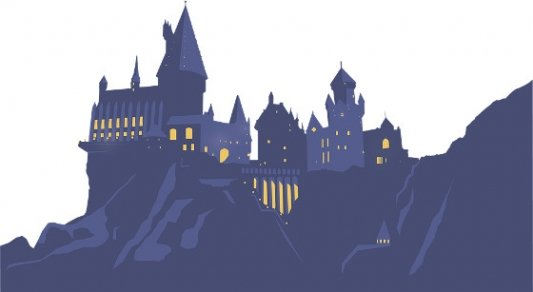
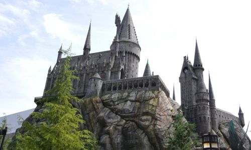
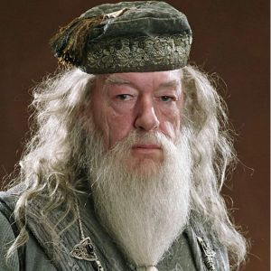
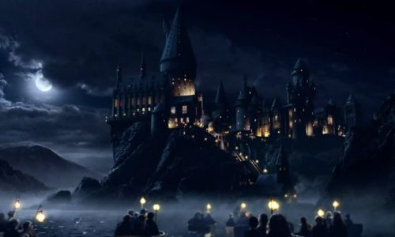

Castillo
El castillo de Hogwarts es una estructura imponente y mágica que se alza majestuosamente en el paisaje escocés. Con sus torres, almenas y muros de piedra, el castillo es un símbolo de la historia y la tradición de la escuela. El castillo está lleno de pasadizos secretos, habitaciones encantadas y lugares mágicos que los estudiantes exploran durante su tiempo en Hogwarts. esde la Sala Común de cada casa hasta el Gran Comedor, el castillo es un lugar de aprendizaje, camaradería y aventura para todos los que lo habitan. El castillo también es un lugar de misterio y peligro, con áreas prohibidas y criaturas mágicas que los estudiantes deben aprender a manejar con cuidado.

Ubicación
La escuela esta ubicada en el norte de Escocia, en una montaña cercana a un lago. Su ubicación remota y protegida por hechizos mágicos la convierte en un refugio seguro para los estudiantes. El acceso a Hogwarts se realiza a través de un tren mágico llamado Expreso de Hogwarts, que parte desde la estación de King’s Cross en Londres. Los estudiantes abordan el tren a través de una plataforma secreta, la Plataforma 9¾, que se encuentra entre las plataformas 9 y 10. El viaje en el Expreso de Hogwarts es una experiencia mágica en sí misma, con vistas impresionantes del paisaje escocés y la emoción de dirigirse a una escuela de magia y hechicería. A sus alrededores se encuentran bosques mágicos, ríos encantados y montañas misteriosas que enriquecen la experiencia de los estudiantes.

Autoridades
Albus Dumbledore fue el director de Hogwarts durante más de cincuenta años, desde 1956 hasta su muerte en 1997. Fue un mago poderoso, sabio y valiente, conocido por su habilidad para resolver conflictos complejos y su compromiso con la justicia. Dumbledore lideró la resistencia contra Lord Voldemort y sus seguidores, los Mortífagos, durante la Primera y Segunda Guerra Mágica. Bajo su liderazgo, Hogwarts se convirtió en un bastión de esperanza y resistencia contra las fuerzas oscuras que amenazaban el mundo mágico. Otros directores importantes incluyen: Severus Snape, Minerva McGonagall y Cornelius Fudge.

Historia
Hogwarts fue fundada hace más de mil años por los cuatro magos más poderosos de la época: Godric Gryffindor, Helga Hufflepuff, Rowena Ravenclaw y Salazar Slytherin. Cada uno de ellos aportó su visión y valores para crear una escuela que formaría a las futuras generaciones de magos y brujas. A lo largo de los siglos, Hogwarts ha sido un lugar de aprendizaje, aventura y magia. Ha resistido numerosos desafíos, incluyendo ataques de magos oscuros y guerras mágicas, pero siempre ha mantenido su compromiso con la educación y la protección de sus estudiantes. Nuestros valores incluyen: honor, coraje, lealtad y sabiduría. No nos esforzamos por ser perfectos, sino por ser mejores cada día. Actualmente, Hogwarts sigue siendo una institución mágica respetada y reconocida en todo el mundo mágico, con una rica tradición y una historia que se ha mantenido viva a través de generaciones de estudiantes.